Home Lab Documentation
A living document of my self-hosted infrastructure, virtualization environment, AI stack, and personal projects. Built for reference and to demonstrate hands-on technical skills to anyone reviewing this portfolio.
Main PC — CachyOS
| CPU | AMD Ryzen 7 9800X3D |
| GPU | AMD RX 9070 XT — 16GB VRAM — ROCm enabled |
| OS | CachyOS (Arch-based) |
| Ollama | Port 11434 — ROCm GPU inference |
| Open WebUI | Port 8080 |
| SearXNG | Port 8081 |
| Storage | Samsung 4TB — model storage at /run/media/Samsung 4TB/ |
Photos
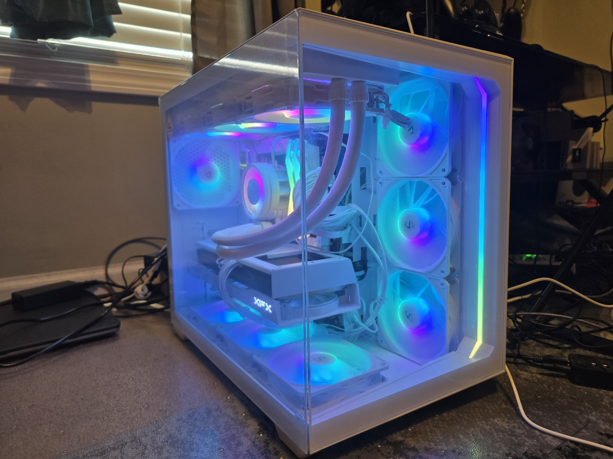
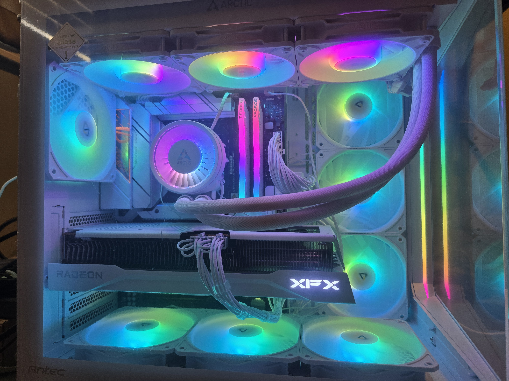
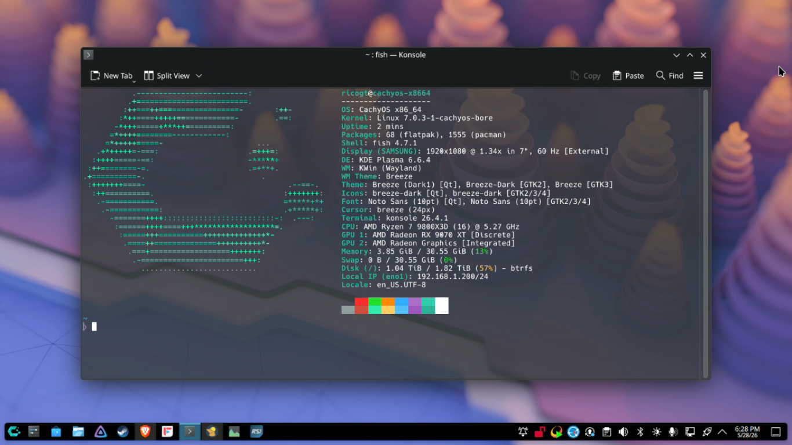
Alienware Alpha R1 — Proxmox Server
| OS | Proxmox VE (Debian-based Hypervisor) |
| CPU | Intel Core i3-4130T — Dual-Core / 4 Threads @ 2.90GHz — 35W TDP |
| GPU | NVIDIA GeForce GTX 860M — 2GB GDDR5 — Proprietary driver passthrough enabled |
| RAM | 16GB DDR3L Dual-Channel @ 1600MHz (Upgraded) |
| Storage | 2.5" SATA III SSD — Local VM/Container storage pool |
| Network | Gigabit Ethernet (RJ-45) / Integrated Intel Dual-Band Wireless |
| Proxmox WebUI | Port 8006 — HTTPS management dashboard |
| Primary Function | Homelab virtualization host — VMs and LXC containers for network services, AD lab, and testing |
Photos
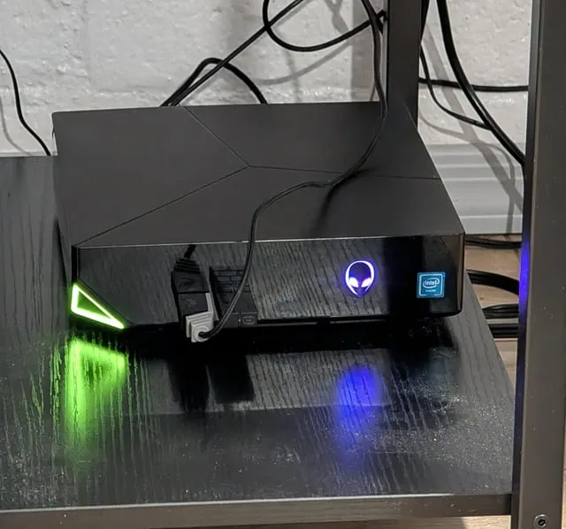
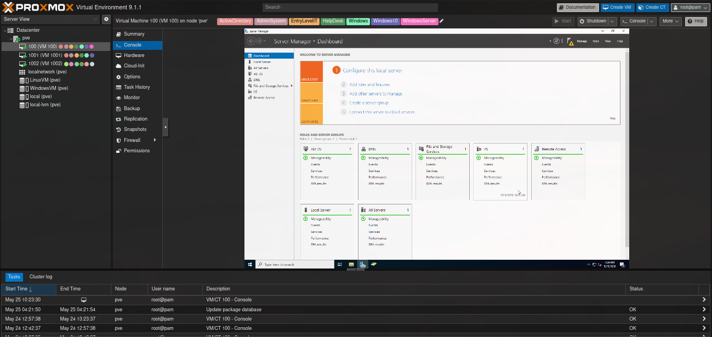
Network
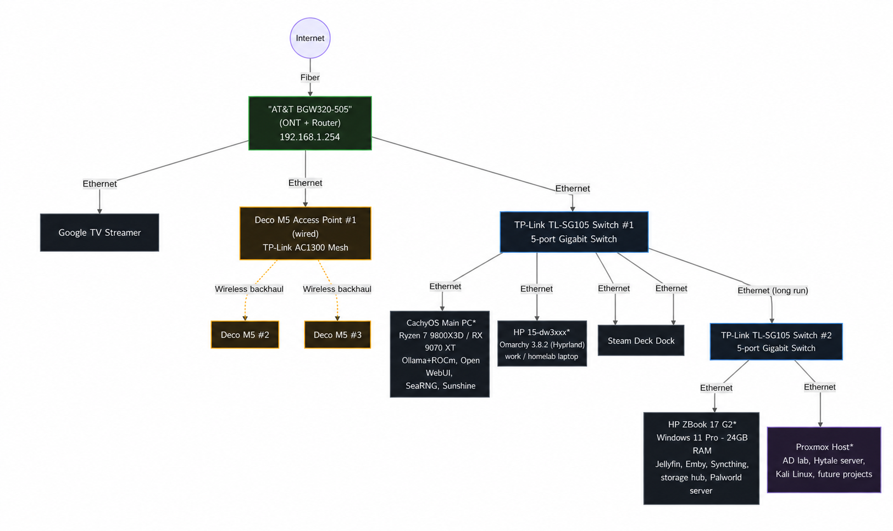
| Router / FW | |
| Switch | |
| ISP Speed | |
| VLANs | |
| DNS | |
| Proxmox Host | Alienware Alpha R1 — Gigabit Ethernet |
~/fix-ollama.sh re-applies drive permissions and iptables rules that reset on reboot on the main workstation.
Lab Photos
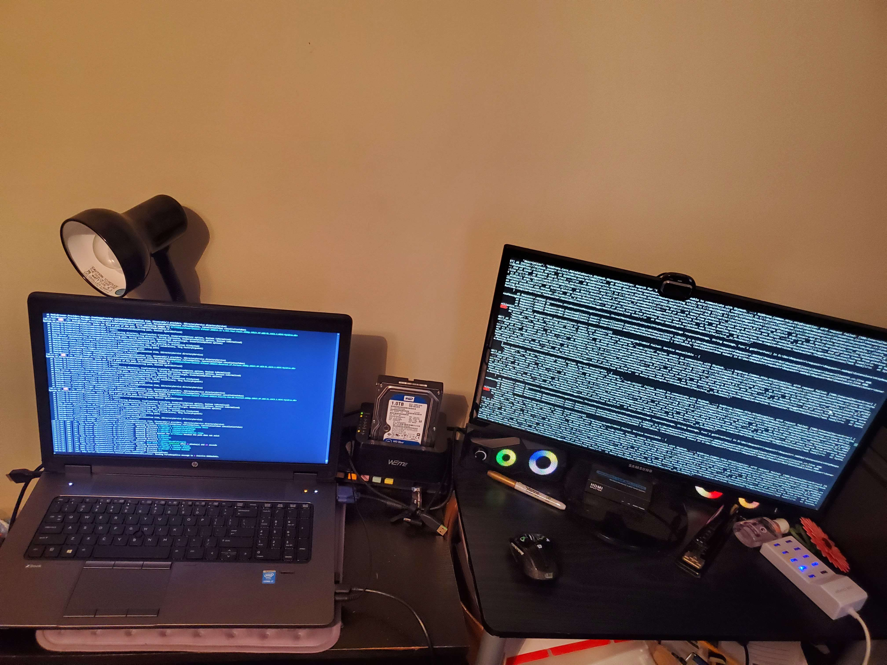
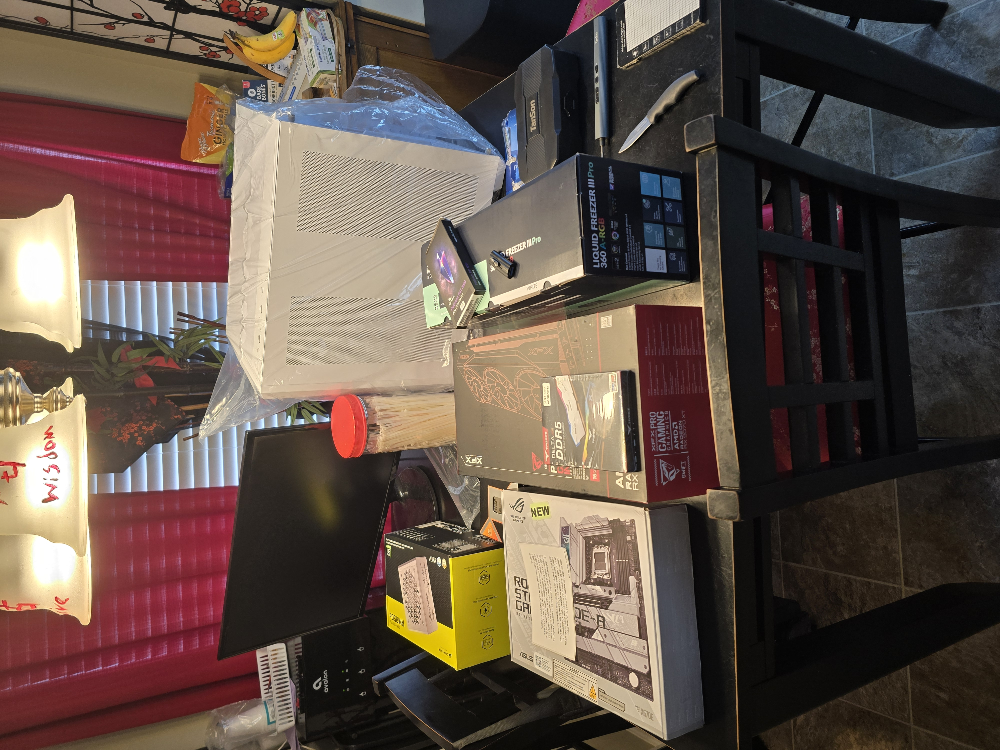

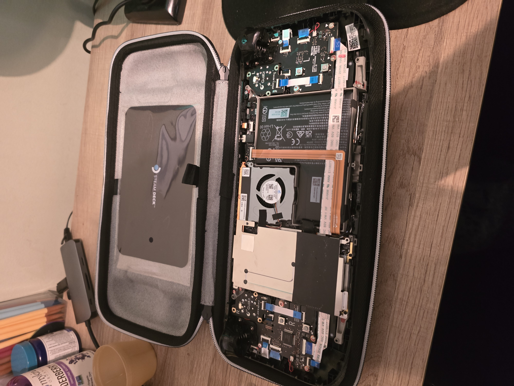
Self-Hosted Services
| Ollama | :11434 — Local LLM inference (ROCm / RX 9070 XT) — Main PC |
| Open WebUI | :8080 — Browser chat UI for Ollama — Main PC |
| SearXNG | :8081 — Self-hosted search engine — Main PC |
| Proxmox VE | :8006 — Virtualization management dashboard — Alienware Alpha R1 |
| Jellyfin | :8096 — Self-hosted media server — Main PC |
| Pi-hole | :80 — Network-wide DNS ad blocker — HP Pavilion laptop |
| OpenClaw | Burner laptop (AnduinOS) — remote Ollama client |
Jellyfin is an open-source, self-hosted media server providing a fully private alternative to commercial streaming platforms. All media is personally owned and stored locally — no subscriptions, no licensing fees, and no third-party data collection. The server indexes, transcodes, and streams content on demand to any device on the network via a clean browser interface or native client apps.
Served at http://localhost:8096/web/index.html#!/home on the main workstation.
Demonstrates practical self-hosted service deployment, port management, media transcoding pipeline
configuration, and local network access control — skills directly transferable to enterprise
application hosting and intranet service management.
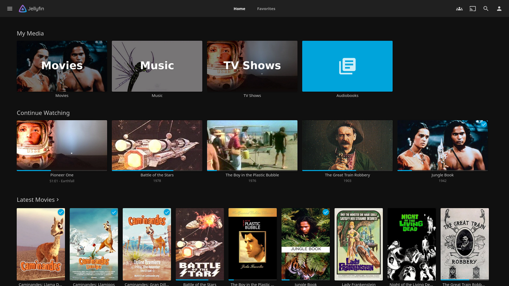
Pi-hole is a self-hosted, network-level DNS sinkhole that intercepts and blocks advertisements, trackers, and malicious domains before they ever reach a device on the network. Unlike browser-based ad blockers that only protect a single device, Pi-hole operates at the DNS layer — every device on the local network routes its queries through it, providing blanket protection across phones, laptops, smart TVs, and IoT devices with zero per-device configuration required.
Hosted on an HP Pavilion TS-15 at 192.168.1.161 and serving as the primary DNS
resolver for the home network. Currently blocking 41.8% of all DNS queries
(27,550 of 65,865 total) across 21 active clients, backed by 1,569,793 domains on block lists.
Demonstrates network infrastructure management, DNS architecture, DHCP/DNS integration, and a
proactive security posture — directly relevant to network security and sysadmin roles.
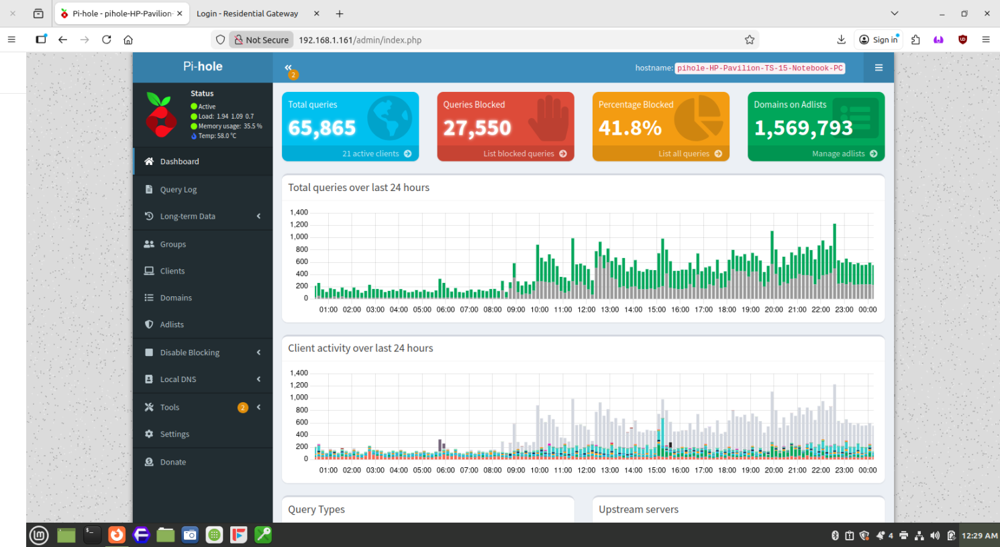
AI Stack
Fully local AI inference stack running on the RX 9070 XT via ROCm. All models stored on the Samsung 4TB drive. A secondary client on AnduinOS connects remotely to the main Ollama instance.
Active Models
| Model Storage | /run/media/Samsung 4TB/ |
| Inference Engine | Ollama with ROCm — AMD RX 9070 XT (16GB VRAM) |
| Chat Interface | Open WebUI — localhost:8080 |
| Search Augmentation | SearXNG — localhost:8081 |
Projects
A single-file web-based diagnostic and quality assurance tool built for eBryIT Inc. to standardize repair ticket documentation across all technicians. Features ADP/NON-ADP checkbox sections, on-hold status tracking, copy buttons with prefix-stripping logic, a hamburger menu with feature toggles, and a full clear-all function. Significantly reduced reporting inconsistencies and improved QA review workflow across all service records.
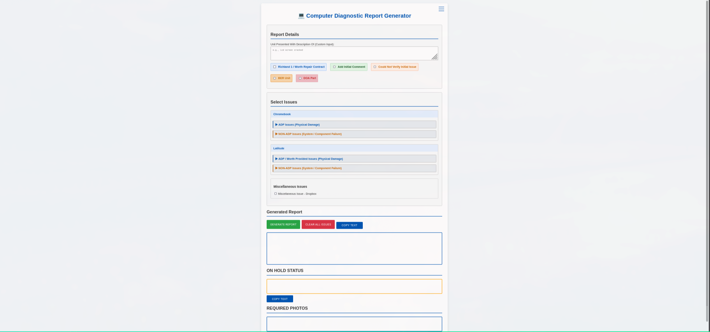
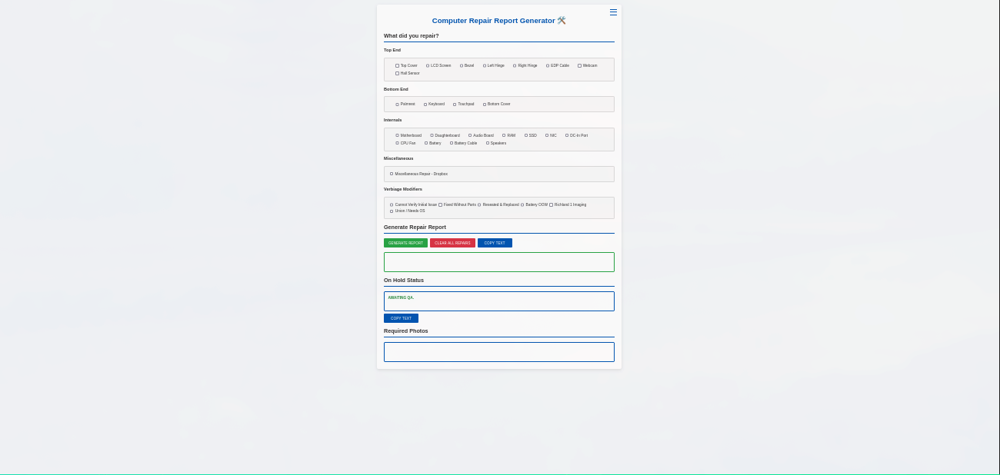
Deployed a full Active Directory environment from scratch on a Windows Server 2022 VM hosted on the Proxmox VE hypervisor (Alienware Alpha R1). Installed and configured Active Directory Domain Services (AD DS), promoted the server to a Domain Controller, and established a local domain. Built out a realistic organizational structure with multiple Organizational Units (OUs) modeled after enterprise environments — including geographic containers (USA, Europe, Asia) with nested OUs for Users, Computers, and Servers. Created Security Groups (both built-in and custom) with appropriate group scopes (Global / Universal / Domain Local) and group types (Security and Distribution) to reflect real-world IAM practices. Created and managed user accounts and assigned group memberships across multiple departments (IT, Finance, HR).
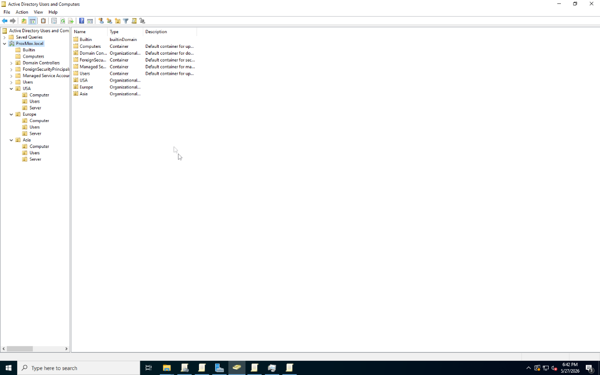
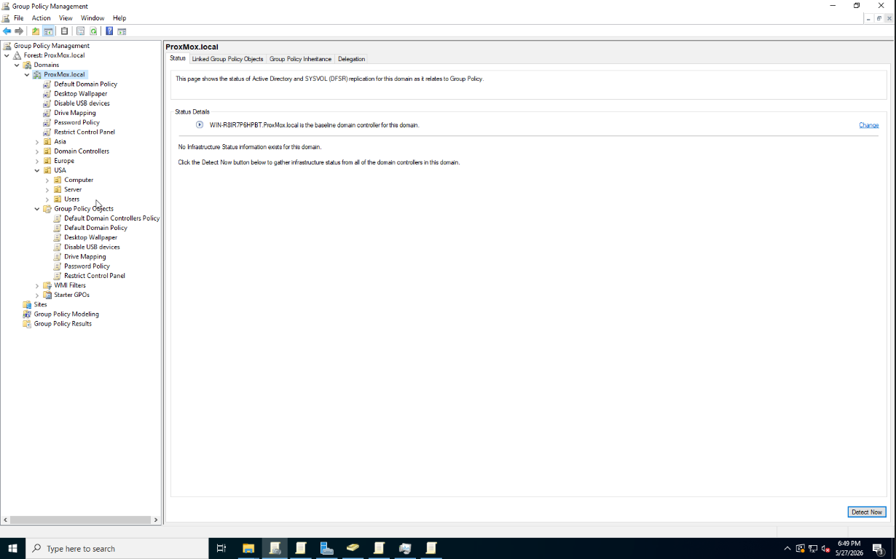
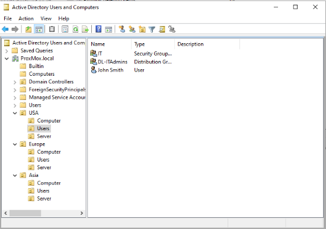
Extended the lab by implementing Group Policy Objects (GPOs) using the Group Policy Management Console (GPMC). Applied the correct configuration type (Computer vs. User) and setting type (Policies vs. Preferences) for each scenario — reinforcing the real-world decision-making process used by enterprise IT administrators daily.
| Password Policy | Computer Config → Policies. Enforced minimum 12-character length, complexity requirements, and 90-day password expiration. Non-modifiable by users. |
| Drive Mapping | User Config → Preferences. Mapped a network share to a consistent drive letter at login. Users retain ability to add additional drives. |
| Desktop Wallpaper | User Config → Policies. Enforced a standardized corporate desktop wallpaper via UNC path. Users cannot override. |
| Restrict Control Panel | User Config → Policies. Fully prohibited user access to Control Panel across all machines in scope. |
| Disable USB Storage | Computer Config → Policies. Blocked all removable storage classes at the system level — enforced and non-overridable by users. |
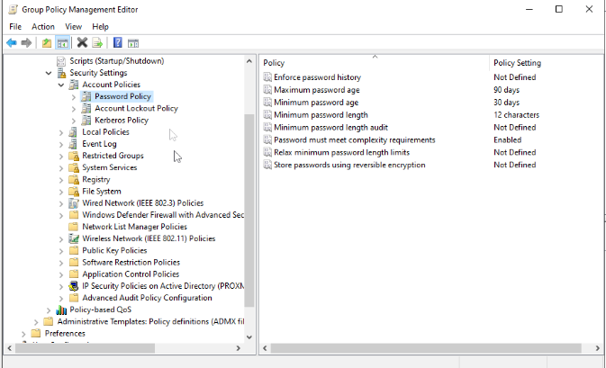
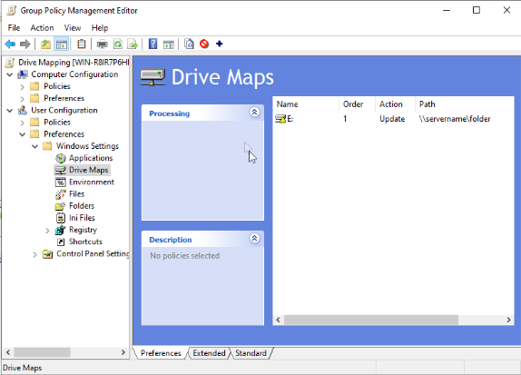
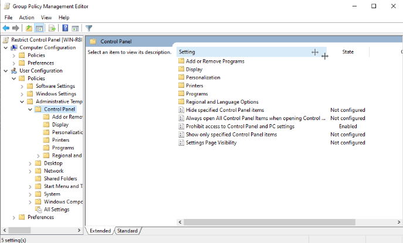
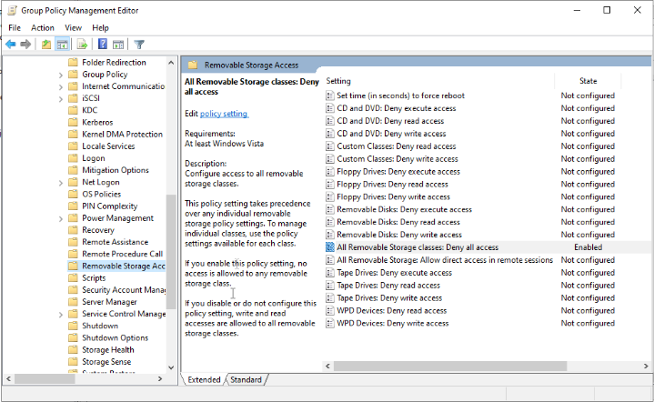
Extended the lab by spinning up a Windows 10 Enterprise VM (via VMware Workstation Pro) as a client machine
and joining it to the Active Directory domain. Configured the Windows Server with a static IP address and set
the loopback address (127.0.0.1) as the primary DNS server — following real-world best practices for domain
controllers. Pointed the client VM's DNS to the domain controller's static IP, verified connectivity via
ping and nslookup, and successfully joined the client to the domain. Logged in
using domain user accounts created in Part 1, confirming AD authentication worked end-to-end.
Implemented all five GPOs from Part 2 by dragging them from the Group Policy Objects container into their
respective OUs — user-scoped GPOs (Drive Mapping, Desktop Wallpaper, Restrict Control Panel) under the Users
OU, and computer-scoped GPOs (Password Policy, Disable USB Storage) under the Computers OU. Moved the newly
joined client machine from the default Computers container into the correct geographic OU and added a
machine description per best practice. Forced immediate GPO application using gpupdate /force
from the command line rather than waiting for the default 90-minute refresh cycle, then verified each policy
was enforced on the client — confirmed by the Control Panel restriction error message appearing on the
domain-joined machine.
| Client VM Setup | Windows 10 Enterprise (free trial) — VMware Workstation Pro — joined to AD domain |
| Static IP (Server) | Assigned existing DHCP IP as static on the domain controller — loopback (127.0.0.1) set as primary DNS, Google (8.8.8.8) as secondary |
| DNS (Client) | Pointed to domain controller's static IP — verified with ping and nslookup <domain> |
| Domain Join | File Explorer → This PC → Properties → Rename PC (Advanced) → Change → Domain — authenticated with admin credentials |
| GPO Deployment | Drag-and-drop GPOs from Group Policy Objects container into correct OUs in GPMC |
| OU Management | Moved domain-joined computer from default Computers container to USA → Computers OU; added machine description |
| Force GPO Apply | gpupdate /force — bypasses 90-minute default refresh; confirmed Control Panel block active on client |
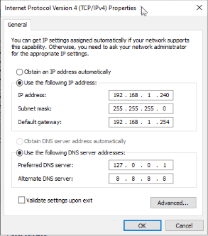
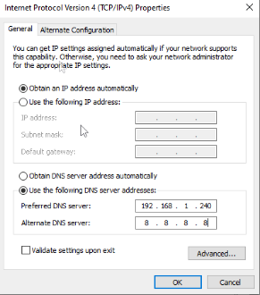
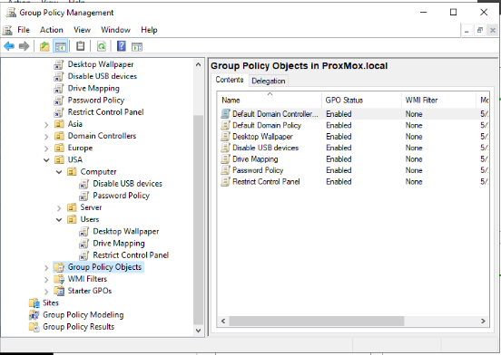
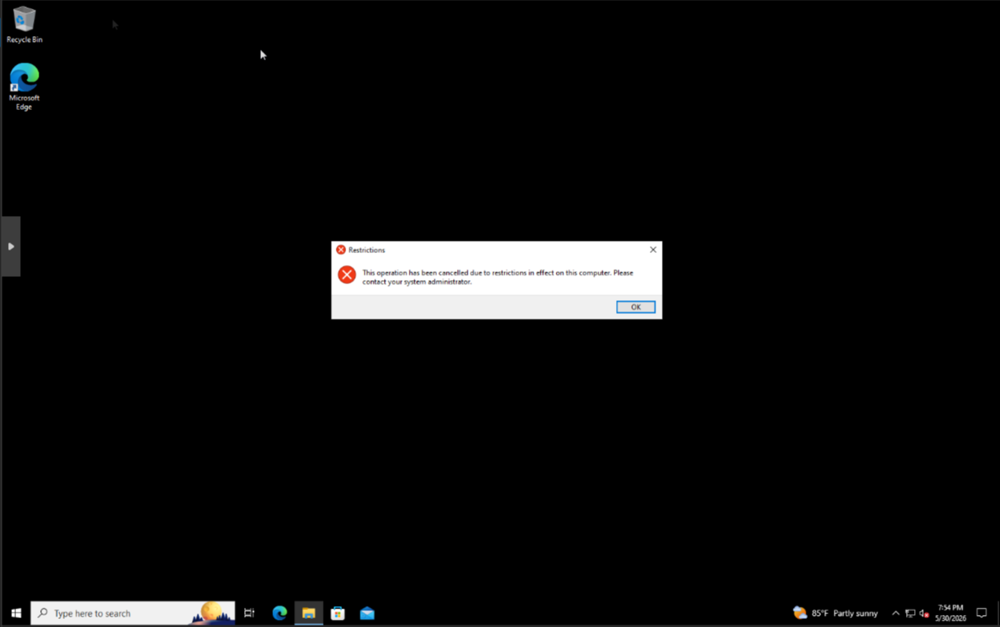
During Part 3, the Windows Settings app would open briefly and immediately close, blocking the network configuration step required to join the client VM to the domain. After investigating DCOM errors (Event ID 10010), the AppX package, and the VM display adapter — the actual root cause was the Restrict Control Panel GPO created in Part 2. On Windows Server, this policy blocks both Control Panel and the Settings app, including for the Administrator account. While troubleshooting, the static IP and DNS were configured via PowerShell as a workaround.
| Symptom | Settings flashes open and immediately closes; network config step unreachable |
| Red herrings | DCOM Event ID 10010, Basic Display Adapter, missing AppX package — all investigated and ruled out |
| Root cause | NoControlPanel: 1 in HKCU\...\Policies\Explorer — Restrict Control Panel GPO applied to all users including Administrator |
| Immediate fix | Remove-ItemProperty -Path "HKCU:\...\Policies\Explorer" -Name "NoControlPanel" |
| Proper fix | GPMC → Security Filtering: removed Authenticated Users, added Domain Users only — Domain Admins now exempt, users still restricted. Ran gpupdate /force to confirm |
| Workaround | Configured static IP and DNS via New-NetIPAddress and Set-DnsClientServerAddress while Settings was inaccessible |
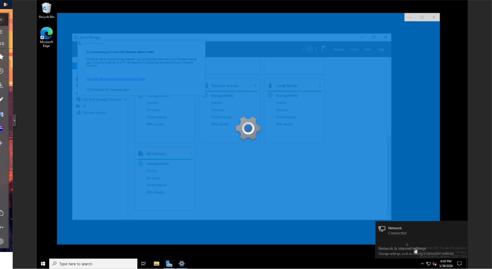
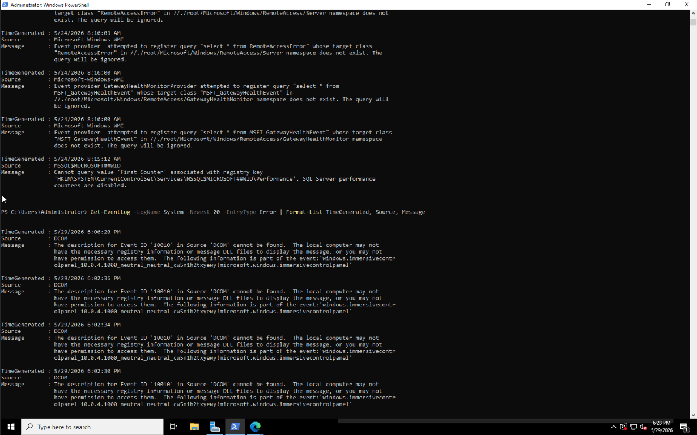
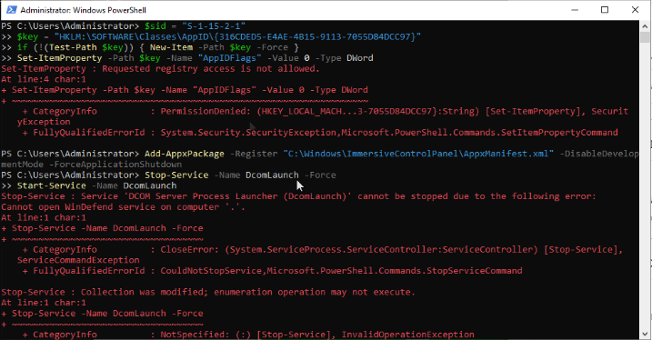
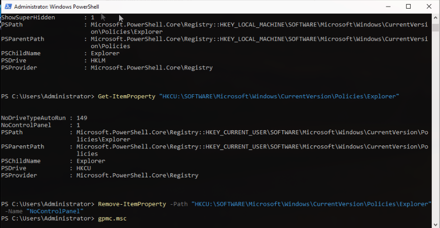
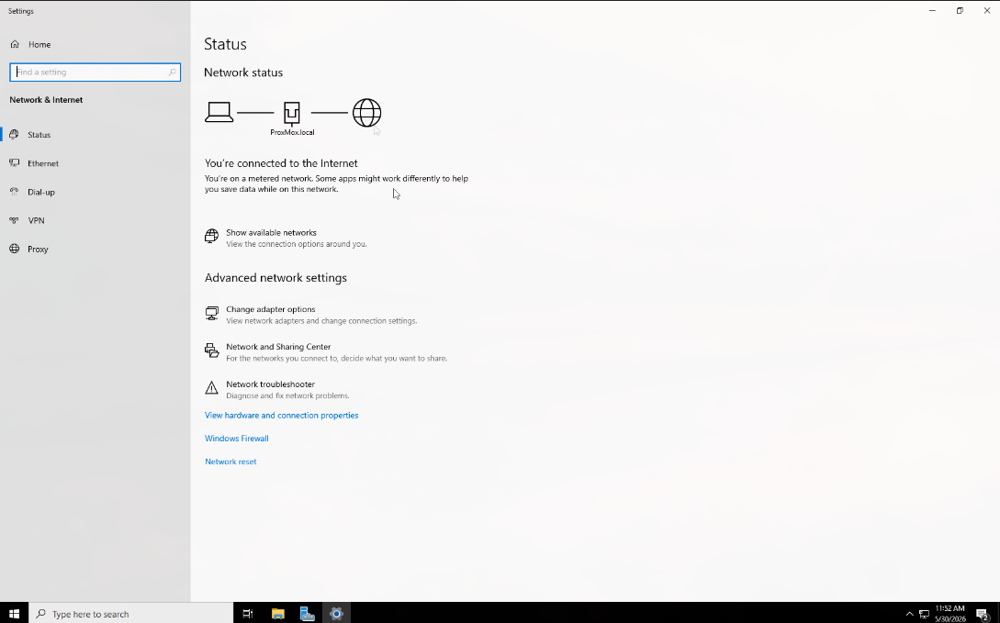
After configuring the server, the client VM failed to join the domain with the error
"An Active Directory Domain Controller for domain ProxMox.local could not be contacted."
The client could ping the DC (192.168.1.240) successfully, meaning the network path was fine —
the issue was purely DNS. The client's DNS was pointing to the AT&T router (192.168.1.254)
instead of the domain controller, so ProxMox.local couldn't be resolved. An
IPv6 router address was also interfering before it was disabled via the registry.
| Symptom | "AD DC for domain ProxMox.local could not be contacted" when attempting to join domain |
| Red herring | IPv6 DNS from router (2600:1700:...) initially intercepting lookups — disabled via registry (DisabledComponents = 255), but root cause was still IPv4 DNS misconfiguration |
| Root cause | Client DNS Servers pointed to 192.168.1.254 (AT&T router via DHCP) — router has no knowledge of ProxMox.local. DC was never consulted. |
| Fix | Manually set client DNS to DC: netsh interface ipv4 set dnsservers "Ethernet" static 192.168.1.240 primary + Google as secondary. Verified with nslookup ProxMox.local resolving through DC. |
| Domain join | Used sysdm.cpl to open Computer Name/Domain Changes directly — bypassed Settings entirely. Entered ProxMox.local and admin credentials. Domain join succeeded. |
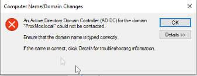
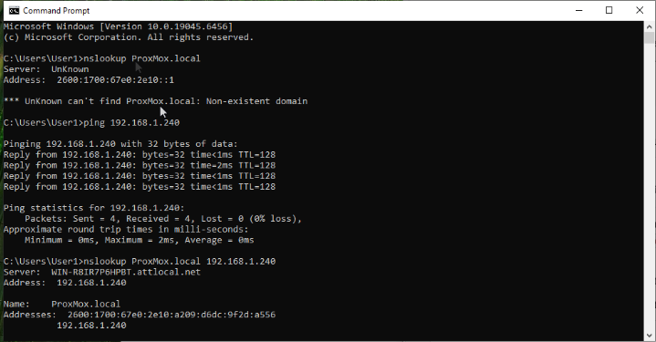
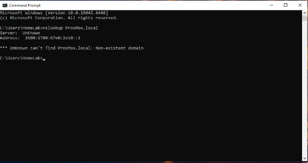
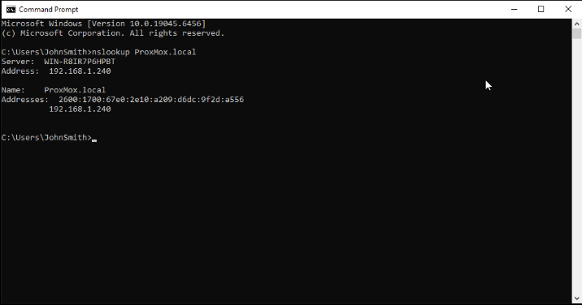
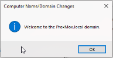
Configured file sharing and storage management on the Windows Server domain. Created a shared folder on the local disk, set both Share permissions and NTFS permissions to control domain user access, and tested access from the client VM. Demonstrated the difference between manual drive mapping (non-persistent) and GPO-automated drive mapping (persistent across reboots). Then installed and configured File Server Resource Manager (FSRM) to enforce storage quotas and file type restrictions on the shared folder.
| Share Permissions | Folder-level only — granted Domain Users read access via Advanced Sharing → Permissions |
| NTFS Permissions | Granular per-file/subfolder permissions set via Security tab — more detailed than share permissions; applied down the full folder tree |
| Manual Drive Map | Mapped via File Explorer → This PC → Map Network Drive (\\ServerName\shared, drive letter S:) — does not persist after reboot |
| GPO Drive Map | Created Map Drives GPO under User Config → Preferences → Windows Settings → Drive Maps; linked to Users OU — persistent, auto-mapped at every login |
| FSRM — Quota | Installed via Server Manager → File and Storage Services → FSRM. Created custom quota on the shared folder with an 80% notification threshold to alert IT admins via email before storage is exhausted |
| FSRM — File Screen | Created custom file screen restricting shared folder to text/document files only — blocked audio, video, compressed, executable, image, and web page file types to prevent storage bloat |
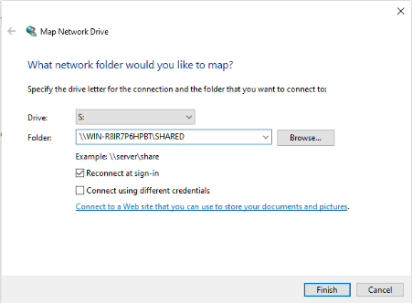
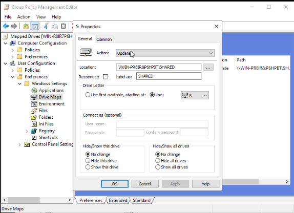
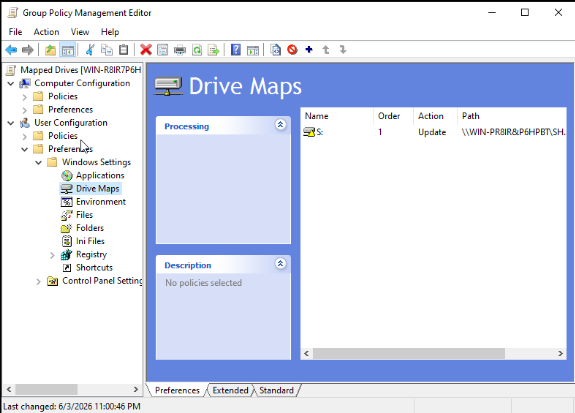
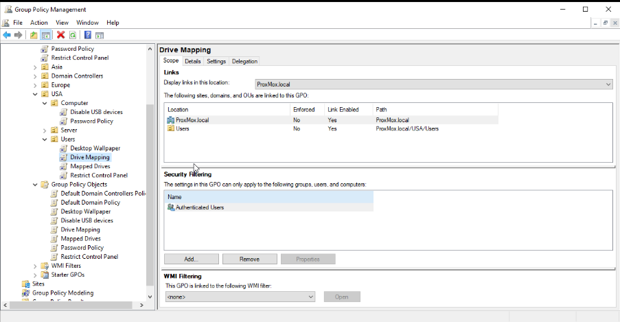
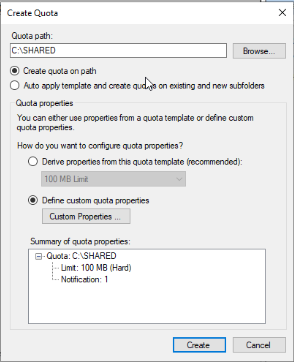
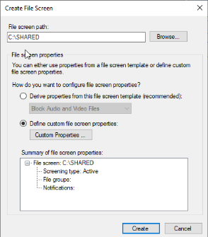
Implemented a full suite of essential security policies across the Active Directory environment using Group Policy and the Active Directory Administrative Center. Covered strong password enforcement, brute-force protection via account lockout, role-based access restrictions through user rights assignment, and fine-grained password policies (PSOs) to apply different password requirements to different user groups — mirroring real-world enterprise security configurations.
| Password Policy | Edited Default Domain Policy — Computer Config → Policies → Windows Settings → Security Settings → Account Policies → Password Policy. Configured: enforce history, max age (90 days), minimum length (12+), complexity requirements enabled. Tested by attempting weak password on a new user — policy rejected it. |
| Account Lockout | Configured via Default Domain Policy → Account Lockout Policy. Set lockout threshold to 3 invalid attempts, lockout duration to 30 minutes, reset counter after 30 minutes. Verified by triggering failed logins until lockout message appeared. |
| User Rights Assignment | Created User Rights GPO — Computer Config → Policies → Windows Settings → Security Settings → Local Policies → User Rights Assignment. Applied Deny log on locally to HR group (blocks direct server login) and Allow log on through Remote Desktop Services to IT Admins only. Both policies verified on client. |
| Fine-Grained Passwords (PSO) | Used Active Directory Administrative Center (not GPMC) — Domain → System → Password Settings Container → New → Password Settings. Created two PSOs: Admin Password Policy (Precedence 1, 15-char min, enforced history, applied to IT Admins group) and User Password Policy (Precedence 2, less strict, applied to Domain Users). Lower precedence number = higher priority when multiple PSOs apply. |
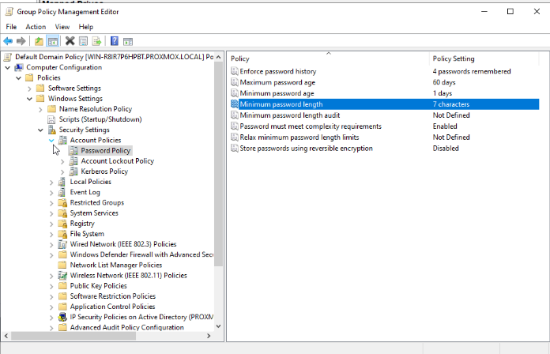
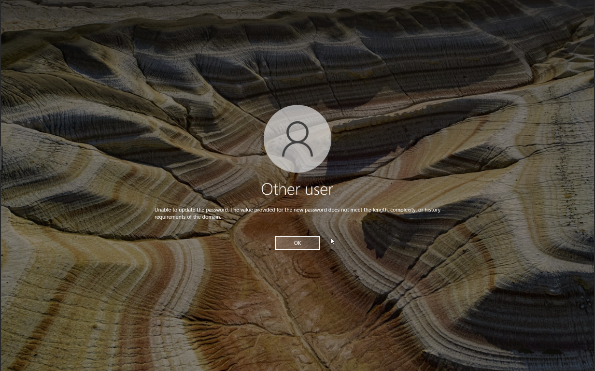
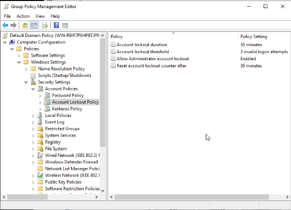
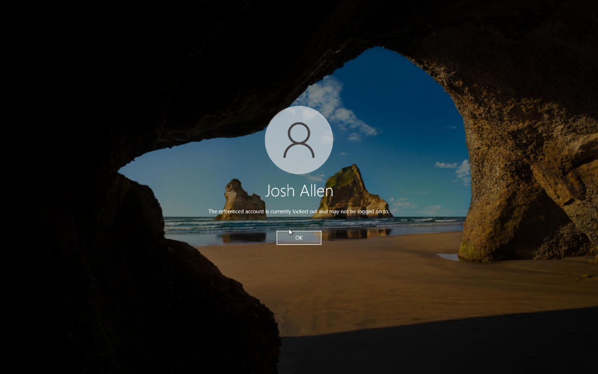
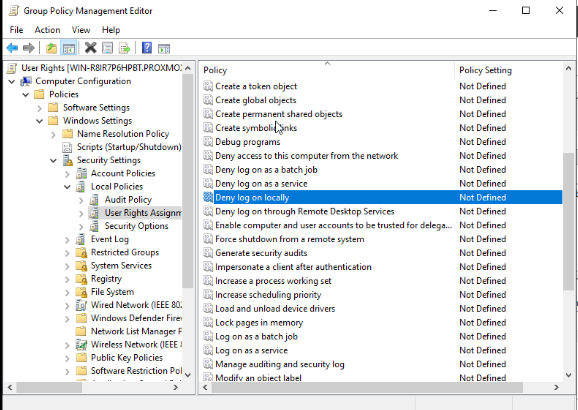
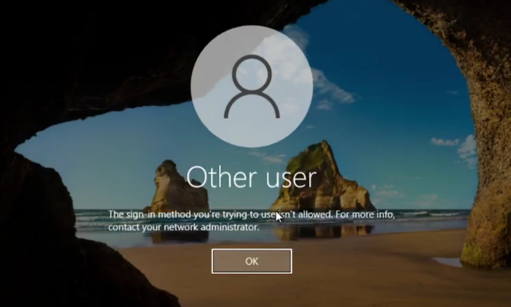
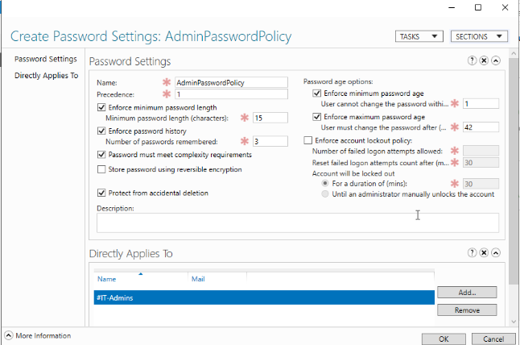
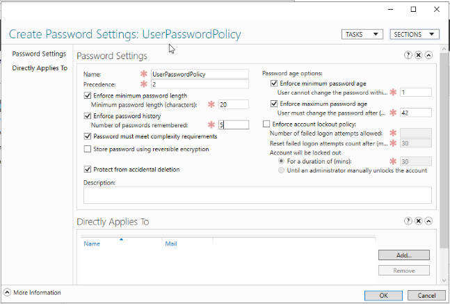
Implemented a practical service account use case modeled after real enterprise environments — configuring a domain-joined Windows client to operate as an unattended, single-purpose display machine using a dedicated service account. Unlike user accounts which are tied to individual people, service accounts run assigned tasks autonomously without human credential entry. This is the same concept behind kiosk terminals, digital signage, and automated process runners found throughout enterprise IT environments.
| Service Account Setup | Created dedicated service account in ADUC under a separate Service Accounts OU. Named with a prefix convention ($website-login) for easy identification among thousands of AD objects. Configured with a non-expiring password and the "Password never expires" flag. |
| Auto Logon | Used Sysinternals Autologon tool on the client VM — entered service account credentials to configure automatic login on reboot. Eliminates manual credential entry; the machine comes back online and logs itself in after any restart or power event. |
| Browser Auto-Start | Configured Google Chrome to open a specific URL on startup — set to github.com/TyrekBrunson as a shameless plug (demonstrating the concept applies to any URL — digital signage, dashboards, internal portals, etc.). Added --start-fullscreen flag to the Chrome desktop shortcut target path. Moved the shortcut to shell:startup so it launches automatically on every login with no user interaction. |
| Display / Sleep | Set screen sleep to Never via Power & Sleep settings — ensures the display stays active indefinitely for kiosk-style continuous operation. |
| GPO — Restrict Logon | Created Restrict Logon to Service Account GPO — Computer Config → Policies → Windows Settings → Security Settings → Local Policies → User Rights Assignment → Deny log on locally. Applied to the All Employees group and linked to the Computers OU. Verified: standard domain users receive an access denied error when attempting to log in locally; only the service account is permitted. |
| Tool Used | Sysinternals Suite (Microsoft) — downloaded and deployed to the network share for team-wide access. Used Autologon utility specifically; suite also used for general AD and system troubleshooting. |
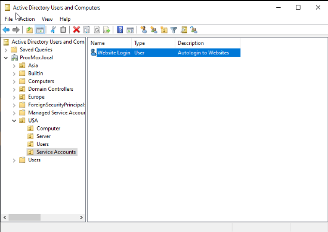
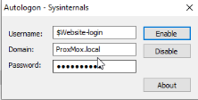
Implemented real-world file sharing scenarios on the Windows Server domain, covering both share permissions and NTFS permissions — the two independent permission layers that govern network resource access in enterprise environments. Worked through four hands-on activities modeled after actual workplace access control requests, applying the principle of least privilege throughout. Also covered explicit vs. inherited permissions and how to break inheritance on subfolders for granular access control.
| Share Permissions | Network-level only (3 options: Read, Change, Full Control). Applied at the folder level via Advanced Sharing → Permissions. Does not cascade to subfolders or apply to local access. |
| NTFS Permissions | File-system level (granular: Full Control, Modify, Read & Execute, List Folder Contents, Read, Write, Special). Applies to both local and network access, cascades to all subfolders and files. |
| Activity 1 — Marketing | Marketing intern needs read-only access to the Marketing folder. Share permissions already had Everyone → Read. Added Marketing Interns group to NTFS with Read only — removed default permissions to enforce least privilege. |
| Activity 2 — HR | HR Group folder must be invisible to all non-HR staff. Removed Everyone from Share permissions, added HR Staff with Full Control. Added HR Staff to NTFS with Full Control — without both layers, subfolder access would still be restricted. |
| Activity 3 — Vendor | Third-party vendor can upload to Vendor Files folder but cannot read existing files. Share: Full Control for Vendor group. NTFS: Write only — removed Read, Read & Execute, and List Folder Contents to prevent the vendor from viewing other files. |
| Activity 4 — IT / Licenses | All IT staff access the Software folder (Full Control via Share + NTFS). Only Senior IT accesses the Licenses subfolder. Disabled inheritance on Licenses subfolder, explicitly granted Senior IT Full Control — breaking the parent's inherited permissions to enforce isolation. |
| Inherited vs. Explicit | Demonstrated that child folders automatically inherit parent NTFS permissions. Used Advanced Security Settings → Disable Inheritance to break the chain on the Licenses subfolder, then applied explicit permissions for Senior IT only. |
Extended the file permissions work from Part 7 into advanced NTFS concepts: effective permissions, inheritance behavior, and explicit deny. Effective permissions are the actual combined result of explicit permissions, inherited permissions, group memberships, and deny rules — with explicit deny always overriding any inherited or allowed access. Built two hands-on labs from scratch on a Windows Server domain with a Windows 11 client, replicating enterprise access-control scenarios involving nested folder structures and per-user restrictions.
| Effective Permissions | The actual resulting access a user has, combining explicit permissions, inherited permissions from parent folders, group membership permissions, and deny rules (which override everything else). |
| Disable Inheritance — Convert | Convert inherited permissions to explicit: preserves all currently inherited permissions as standalone explicit entries on the object, but the object no longer receives future changes from the parent. Used when keeping existing access but cutting the inheritance link. |
| Disable Inheritance — Remove | Remove all inherited permissions: wipes every inherited entry, leaving a clean slate that requires manually re-adding all access. Used when starting a subfolder's permissions from scratch. |
| Lab 1 — Project Subfolder Isolation | Created Common\ with subfolders Project\ and Events\, plus a nested Project\Contracts\. Set Common to Full Control for Everyone (Share + NTFS) — confirmed inheritance cascades automatically to all subfolders and new nested folders. Created a Project security group (Global scope). On Project\: disabled inheritance using Convert, removed Everyone, and granted the Project group Full Control — isolating that one subfolder while Events\ retained Everyone's inherited access. |
| Lab 2 — Explicit Deny (John Doe) | Created Project\ with Read/Write for Everyone, plus subfolders Confidential\ and Materials\ — both inherited Everyone's Read/Write. Created user John Doe (member of Employees group). On Confidential\, added John explicitly and set Deny: Read — verified Everyone (including other employees) retained full access while John alone was blocked, and Materials\ remained completely unaffected. |
Implemented Access-Based Enumeration (ABE) — a Windows Server feature that hides shared files and folders from users who lack permission to access them, so users only ever see what they're authorized to open. ABE is purely a visibility filter layered on top of existing NTFS and Share permissions; it does not grant or change access, it simply prevents permission-less folders from appearing in the directory listing at all. Built a realistic two-department file server scenario for HR and IT, configured NTFS and Share permissions per department, then enabled ABE and verified that each department's users see only their own folder.
| ABE Requirements | NTFS volumes only — ABE does not function on FAT32/exFAT. Relies entirely on correctly configured NTFS and Share permissions; misconfigured permissions are not corrected by ABE, only hidden behavior is affected. |
| AD Setup | Created two security groups (Global scope): HR Department and IT Department. Created test users — Conan Doyle (added to HR Department) and Lacos (added to IT Department) — via both the "Member Of" tab and group "Members" tab methods. |
| Shared Folder Structure | Created Department Shares\ on the server with subfolders HR\ and IT\ — a single shared root containing department-segregated content. |
| NTFS Permissions | On both HR\ and IT\: disabled inheritance (Convert), removed default Users/Authenticated Users entries, and granted Full Control to the respective department group only — HR Department on HR\, IT Department on IT\. |
| Share Permissions | On Department Shares\ (the parent): removed Everyone, added both HR Department and IT Department groups with Read access — granting entry into the share so users can reach their respective subfolders. |
| Enabling ABE | Server Manager → File and Storage Services → Shares → right-click Department Shares → Properties → Settings → enabled Access-Based Enumeration. |
| Verification | Logged in as Conan (HR) on a Windows 11 client joined to the domain via \\ServerName\Department Shares — only the HR folder was visible, IT was completely hidden. Logged in as Lacos (IT) — only the IT folder was visible, HR was hidden. Confirmed new subfolders created under HR correctly inherited HR-only permissions. |
Over the course of this multi-week, nine-part home lab series, a complete Active Directory environment was built from a bare hypervisor up through enterprise-grade security, file services, and access control — entirely self-hosted on Proxmox VE running on the Alienware Alpha R1. The project progressed from initial domain controller deployment through Group Policy management, client domain-joining, file sharing and storage management, layered security policies, service account automation, and advanced NTFS permission models including access-based enumeration. Real troubleshooting issues encountered along the way — DCOM/Settings crashes, DNS misconfiguration, and GPO lockout edge cases — were diagnosed and resolved using the same methodology used in production environments: isolating variables, checking event logs, and verifying fixes with reproducible tests.
- Proxmox VE hypervisor deployment
- Windows Server 2022 installation & configuration
- VM provisioning (Windows 10/11 clients)
- Static IP & DNS configuration
- AD DS installation & domain controller promotion
- OU design & organizational structure
- Security & distribution groups, group scopes
- User & service account management
- Domain join & client troubleshooting
- GPO creation, linking & security filtering
- Computer vs. User configuration
- Policies vs. Preferences
- gpupdate /force & policy verification
- Share vs. NTFS permissions
- Inheritance, explicit deny & effective permissions
- FSRM — quotas & file screening
- Access-Based Enumeration (ABE)
- GPO-based drive mapping
- Password & account lockout policies
- Fine-grained password policies (PSOs)
- User rights assignment / RBAC
- Service account hardening
- Event Viewer & log analysis
- DCOM & UWP app diagnostics
- DNS resolution debugging
- GPO conflict isolation
- PowerShell-based remediation
Full local AI inference stack on CachyOS using ROCm-enabled Ollama with an AMD RX 9070 XT (16GB VRAM). Paired with Open WebUI for a browser chat interface and SearXNG for local search augmentation. Includes a remote client configuration on a secondary machine (AnduinOS + OpenClaw) connected to the main Ollama instance over the local network.
Set up a fully self-hosted, persistent Hytale dedicated server on the home network the same week the game went live. This covered Java runtime management, OAuth2-based server authentication, configuration-as-code via JSON, startup automation with scheduled backups, Windows Firewall rule creation, and router-level port forwarding. The same NAT and port-forwarding infrastructure already used to expose Jellyfin, Emby, and Sunshine on the home network was extended to support this new service, demonstrating a repeatable process for bringing any self-hosted application online.
Installed the Eclipse Temurin JDK 25 distribution (Windows x64 MSI) — the minimum runtime required
to host a Hytale server, with both x64 and ARM64 builds supported. Verified the installation and
associated .jar file handling so the server binary would launch correctly via Java.
Used the official Hytale Downloader CLI to fetch the dedicated server binaries and the ~3.3GB
Assets.zip game asset package — avoiding the need to manually copy files out of the
game client installation. On first launch, the server prompted for authentication via an
OAuth2 device authorization flow: a device code was generated, approved through
a browser sign-in, and the session was linked to the hosting account. Configured
/auth persistence encrypted so credentials are stored encrypted on disk
(auth.enc) and survive server restarts without re-authentication.
Built a Start.bat launch script that enables an AOT (Ahead-of-Time) compilation cache
for faster startup, points to the server JAR and asset package, and schedules automated backups
to a local backup/ directory every 30 minutes. Customized config.json to
set the server name, message-of-the-day, max player count (100), view radius (32), and default
game mode (Adventure) — keeping server identity and behavior fully version-controllable as plain JSON.
| Launch Command | java -XX:AOTCache=HytaleServer.aot -jar HytaleServer.jar --assets Assets.zip --backup --backup-dir backup --backup-frequency 30 |
| Server Identity | Name: "Rico GT's Hytale Server" · MOTD: "Hello World!" · Max Players: 100 · View Radius: 32 · Default Mode: Adventure |
| Backups | Automated, scheduled every 30 minutes to a local backup/ folder alongside the server JAR |
Identified the host machine via hostname and local IP via ipconfig.
Created an inbound Windows Firewall rule with PowerShell's New-NetFirewallRule to
allow UDP traffic on Hytale's default port (5520). On the AT&T router's NAT/Gaming
configuration page, added a custom Hytale service forwarding UDP 5520 to the
host's local IP — the same page already hosting port-forward rules for Jellyfin, Emby, Palworld,
and Sunshine, extending the existing self-hosted services infrastructure to a new application.
| Host | DESKTOP-EGCFO7U — local IP 192.168.1.238 |
| Firewall Rule | New-NetFirewallRule -DisplayName "Hytale Server" -Direction Inbound -Protocol UDP -LocalPort 5520 -Action Allow |
| Port Forward | UDP 5520 → DESKTOP-EGCFO7U via AT&T router NAT/Gaming — alongside existing Jellyfin (8096), Emby (8920), Palworld, and Sunshine remote-play rules |
Added the server in the Hytale launcher's Private Servers list using its local IP, connected,
and verified two-way functionality by sending a chat message that appeared both in-game and in
the server console log in real time. Granted operator permissions via the server console with
/op add RicoGT — confirmed by both the console log entry and an in-game
"You have been made an operator" notification, demonstrating console-based RBAC management
for a live multiplayer service.
Last updated: June 2026

Tyrek Brunson
IT Support & Systems Professional • CompTIA Certified • Self-Hosted Infrastructure
Work Experience
- Resolve hardware and software issues across desktops, laptops, printers, and mobile devices for K-12 school clients, maintaining accurate records of every repair to support asset tracking and recurring issue analysis.
- Designed and deployed an internal JavaScript/HTML/CSS QA diagnostic tool that standardized ticket terminology across the team, reducing documentation inconsistencies and streamlining the QA review process for all incoming devices.
- Diagnosed an intermittent network outage traced to damaged cabling between a wireless access point and the main server; performed full cable replacement, re-termination, and reconnection, restoring full network access with zero escalation.
- Support Android and iOS mobile devices including configuration, troubleshooting, and data migration across repaired and refurbished units.
- Maintain chain-of-custody integrity by transferring asset IDs and system data between devices, ensuring accurate inventory records throughout the repair lifecycle.
- Delivered Tier 1/2 technical support across multiple department locations, resolving hardware and software issues for staff and escalating complex cases with thorough documentation.
- Reimaged and deployed new workstations to a consistent, tested configuration, reducing setup variability and minimizing post-deployment support requests.
- Recovered data from damaged devices and transferred assets to replacement hardware with minimal disruption to end users.
- Installed and configured networking and server equipment at a branch department, including physical cabling, device setup, and IP camera systems.
- Processed student applications and maintained accurate records including sensitive PII in compliance with institutional data standards.
- Updated student data in the college records system with consistent accuracy, supporting department workflows and audit readiness.
Technical Skills
Education
| Institution | University of South Carolina — Columbia, SC |
| Years | 2020 – 2024 |
| Institution | Midlands Technical College — Columbia, SC |
| Completed | August 2021 |
Certifications
Click the badge image to view the full certificate. Click View PDF to open the official certificate document.


Last updated: May 2026 • CompTIA Candidate ID: COMP001022901850